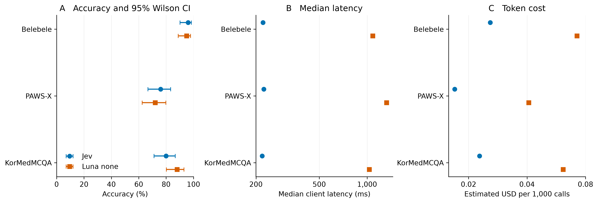

Jev versus Luna without reasoning
Abstract
This paired extension compares Jev with GPT-5.6 Luna at explicit reasoning effort none on the same frozen Korean and English cases. It measures task accuracy, client latency and token cost. The comparison was designed after Jev results were inspected and is an exploratory replication, not a preregistered confirmatory study. No higher-reasoning Luna run was performed.
With Korean content and Korean instructions, Luna versus Jev accuracy was Belebele 95% versus 96%, PAWS-X 72% versus 76%, KorMedMCQA 88% versus 80%. Luna's total observed-usage cost was $0.05337, and summed API attempt time was 1543.6 seconds. These task-specific results do not establish a single ordering of model capability.
Methods
Luna used the Responses API, standard service tier, one isolated request per case and a strict JSON schema returning only an answer ID or boolean. The original instructions, state and choice order were retained. State and criteria were serialized as UTF-8 JSON, an interface difference from Jev. No tools, retrieval, explanation, probability elicitation or conversation history was used. Output was capped at 128 tokens. All 1,036 conditions were frozen before the first Luna call. Jev returns probabilities natively as well as its decision. This comparison measures the cost of obtaining a decision, not equal amounts of output information.
The same seed, source IDs and gold labels as the original pilot were used. General tasks and medical knowledge remain separate. The 40 synthetic medical cases remain unreviewed and exploratory. Their minimal pairs are dependent, which the displayed case-level intervals do not account for. Stage 4 repeats earlier cases and receives flip counts rather than an independent accuracy interval. Wilson intervals describe task accuracy. Paired percentile bootstrap intervals use 4,000 resamples and are exploratory, unadjusted for multiple comparisons. Degenerate intervals for identical observed correctness do not establish equivalence.
The API returned gpt-5.6-luna, without a dated snapshot. Requests specify none, and reported reasoning-token counts are audited. Sampling parameters were left at provider defaults and are retained in the raw responses. Calls run sequentially through httpx 0.28.1 with a 30-second timeout and at most two transient retries. Immutable intents prevent automatic resending of uncertain interrupted requests.
Jev timing wraps its SDK call and decoding. Luna timing wraps HTTP response decoding and answer validation, with a small additional local parsing component. Both include network latency and exclude disk writes. The runs occurred at different times and used different provider transports. These measurements describe the observed services, not architecture-only speed or server compute. Conditions were not randomly interleaved across providers.
Results

Figure 1. Korean content and Korean instructions, 100 matched cases per task. Bars show 95% Wilson accuracy intervals. Median latency and estimated token cost use the same successful cases. Latency and cost axes are logarithmic. Point estimates have no uncertainty bars in those panels and should not be interpreted as stable population ratios. Synthetic medical cases are excluded.
Stage 1
Decision-only responses. No probabilities, Brier score or confidence-based coverage are available.
| Task / condition | n | Luna accuracy (95% CI) | Jev accuracy | Luna minus Jev (95% paired interval) | Median / p95 ms | USD |
|---|---|---|---|---|---|---|
| belebele/en_en | 100 | 98.0% (93.0%, 99.4%) | 97.0% | +1.0 (-3.0, +6.0) pp | 1060 / 3252 | 0.005894 |
| belebele/ko_en | 100 | 93.0% (86.3%, 96.6%) | 95.0% | -2.0 (-7.0, +4.0) pp | 1063 / 2979 | 0.007063 |
| belebele/ko_ko | 100 | 95.0% (88.8%, 97.8%) | 96.0% | -1.0 (-5.0, +3.0) pp | 1085 / 2928 | 0.007223 |
| pawsx/en_en | 100 | 83.0% (74.5%, 89.1%) | 80.0% | +3.0 (-3.0, +10.0) pp | 1188 / 3358 | 0.003599 |
| pawsx/ko_en | 100 | 76.0% (66.8%, 83.3%) | 75.0% | +1.0 (-9.0, +10.0) pp | 1024 / 3234 | 0.003984 |
| pawsx/ko_ko | 100 | 72.0% (62.5%, 79.9%) | 76.0% | -4.0 (-14.0, +5.0) pp | 1326 / 3197 | 0.004084 |
Within-Luna paired language differences
| Task / contrast | Difference (95% paired interval), pp |
|---|---|
| belebele, ko_en minus en_en | -5.0 (-10.0, -1.0) |
| belebele, ko_ko minus ko_en | +2.0 (+0.0, +5.0) |
| pawsx, ko_en minus en_en | -7.0 (-16.0, +2.0) |
| pawsx, ko_ko minus ko_en | -4.0 (-9.0, +1.0) |
Successful 600/600, terminal failures 0, pending 0. Stage 3 is unreviewed and exploratory. Stage 4 reuses cases and is not a primary accuracy estimate.
Stage 2
Decision-only responses. No probabilities, Brier score or confidence-based coverage are available.
| Task / condition | n | Luna accuracy (95% CI) | Jev accuracy | Luna minus Jev (95% paired interval) | Median / p95 ms | USD |
|---|---|---|---|---|---|---|
| kormed/ko_en | 100 | 89.0% (81.4%, 93.7%) | 82.0% | +7.0 (+0.0, +14.0) pp | 1098 / 2772 | 0.005957 |
| kormed/ko_ko | 100 | 88.0% (80.2%, 93.0%) | 80.0% | +8.0 (+2.0, +15.0) pp | 1032 / 2749 | 0.006137 |
Within-Luna paired language differences
| Task / contrast | Difference (95% paired interval), pp |
|---|---|
| kormed, ko_ko minus ko_en | -1.0 (-3.0, +0.0) |
Successful 200/200, terminal failures 0, pending 0. Stage 3 is unreviewed and exploratory. Stage 4 reuses cases and is not a primary accuracy estimate.
Stage 3
Decision-only responses. No probabilities, Brier score or confidence-based coverage are available.
| Task / condition | n | Luna accuracy (95% CI) | Jev accuracy | Luna minus Jev (95% paired interval) | Median / p95 ms | USD |
|---|---|---|---|---|---|---|
| medical_text/en_en | 40 | 97.5% (87.1%, 99.6%) | 100.0% | -2.5 (-7.5, +0.0) pp | 1247 / 3268 | 0.001350 |
| medical_text/ko_en | 40 | 100.0% (91.2%, 100.0%) | 100.0% | +0.0 (+0.0, +0.0) pp | 1094 / 2908 | 0.001378 |
| medical_text/ko_ko | 40 | 100.0% (91.2%, 100.0%) | 100.0% | +0.0 (+0.0, +0.0) pp | 989 / 2415 | 0.001464 |
Successful 120/120, terminal failures 0, pending 0. Stage 3 is unreviewed and exploratory. Stage 4 reuses cases and is not a primary accuracy estimate.
Stage 4
Decision-only responses. No probabilities, Brier score or confidence-based coverage are available.
| Task / perturbation | n | Luna answer flips | Jev answer flips |
|---|---|---|---|
| belebele/repeat1 | 5 | 0 | 1 |
| belebele/repeat2 | 5 | 0 | 0 |
| belebele/variant1 | 5 | 1 | 0 |
| belebele/variant2 | 5 | 1 | 0 |
| pawsx/repeat1 | 5 | 0 | 0 |
| pawsx/repeat2 | 5 | 0 | 0 |
| pawsx/variant1 | 5 | 3 | 3 |
| pawsx/variant2 | 5 | 3 | 3 |
| kormed/repeat1 | 5 | 0 | 0 |
| kormed/repeat2 | 5 | 0 | 0 |
| kormed/variant1 | 5 | 1 | 0 |
| kormed/variant2 | 5 | 1 | 0 |
| medical_text/repeat1 | 5 | 0 | 0 |
| medical_text/repeat2 | 5 | 0 | 0 |
| medical_text/variant1 | 5 | 0 | 0 |
| medical_text/variant2 | 5 | 0 | 0 |
Successful 80/80, terminal failures 0, pending 0. Stage 3 is unreviewed and exploratory. Stage 4 reuses cases and is not a primary accuracy estimate.
Runtime and cost
| Measure | Luna none |
|---|---|
| Successful evaluations | 1,036 |
| API attempts | 1,037 |
| Input tokens | 191,819 |
| Output tokens | 12,502 |
| Cached input tokens | 0 |
| Reasoning tokens | 0 |
| Observed-usage cost estimate (USD) | 0.053366 |
| Conservative ledger (USD) | 0.054204 |
| Median successful-call latency (ms) | 1110.264850 |
| p95 successful-call latency (ms) | 3112.547450 |
| Summed API attempt duration (seconds) | 1543.614323 |
| Recorded runner duration (seconds) | 1550.913587 |
Answer disagreements
The downloadable disagreements file lists every differing primary or exploratory prediction with its frozen gold label. The table below shows the first 20 in frozen evaluation order, not a curated selection of favorable examples.
| Evaluation | Gold | Jev | Luna |
|---|---|---|---|
| belebele-8c4db14e52be875e__ko_en | 1 | 1 | 4 |
| belebele-8c4db14e52be875e__ko_ko | 1 | 1 | 4 |
| belebele-7f3ada63d6686c7c__ko_en | 3 | 3 | 4 |
| belebele-ebf426ae131cdeff__en_en | 2 | 4 | 2 |
| belebele-ebf426ae131cdeff__ko_en | 2 | 4 | 2 |
| belebele-ebf426ae131cdeff__ko_ko | 2 | 4 | 2 |
| belebele-66c76c721a3e9d34__en_en | 4 | 4 | 3 |
| belebele-9881d64792dc69ae__en_en | 4 | 4 | 1 |
| belebele-9881d64792dc69ae__ko_en | 4 | 4 | 1 |
| belebele-9881d64792dc69ae__ko_ko | 4 | 4 | 1 |
| belebele-c389cd7dfb2c53d7__en_en | 1 | 2 | 1 |
| belebele-c389cd7dfb2c53d7__ko_en | 1 | 2 | 1 |
| belebele-f0b7aadb4f3e56ed__ko_en | 1 | 4 | 2 |
| belebele-f0b7aadb4f3e56ed__ko_ko | 1 | 4 | 2 |
| belebele-f471b61b75e8cb4d__ko_en | 4 | 4 | 3 |
| belebele-f471b61b75e8cb4d__ko_ko | 4 | 4 | 3 |
| belebele-bb42edc717241afa__en_en | 1 | 4 | 1 |
| belebele-bb42edc717241afa__ko_en | 1 | 2 | 1 |
| belebele-bb42edc717241afa__ko_ko | 1 | 2 | 1 |
| belebele-064e684d30c94efa__ko_en | 1 | 1 | 2 |
USD estimates use $0.20 per million uncached input tokens, $0.02 cached input and $1.20 output. Each provider uses its own reported token counts, which can differ because of tokenization and request overhead. Reasoning tokens, if any, are part of output and must not be billed twice. Failed attempts with unknown usage retain conservative reservations. Estimates are not invoice reconciliation. Runner wall time excludes preparation, reporting performed after its timing boundary, and human gaps. Jev runner timing omitted its first ten development calls, so summed API duration is the more complete comparison.
Limitations and next decision
No pooled cross-task winner is defined. Public benchmark training exposure is unknown, and medical media screening changes the target population. No matched English medical examination arm exists. Neither synthetic performance nor exam accuracy establishes clinical readiness.
Complete response records remain immutable locally. The public export omits billing and account-related metadata, retaining original-record hashes, model answers, generation settings, usage, latency and scoring evidence. Benchmark input text is reconstructed from pinned upstream sources rather than redistributed here.
Luna returns decisions only. Brier scores, log loss and confidence-based coverage cannot be computed for Luna in this protocol. Fabricating one-hot probabilities or eliciting confidence after the fact would change the question being measured. A higher-reasoning experiment should be separately frozen and budgeted after reviewing these results, rather than replacing this run.
Original Jev report · Comparison rationale and literature · Medical benchmark context infographic · Public Luna evidence